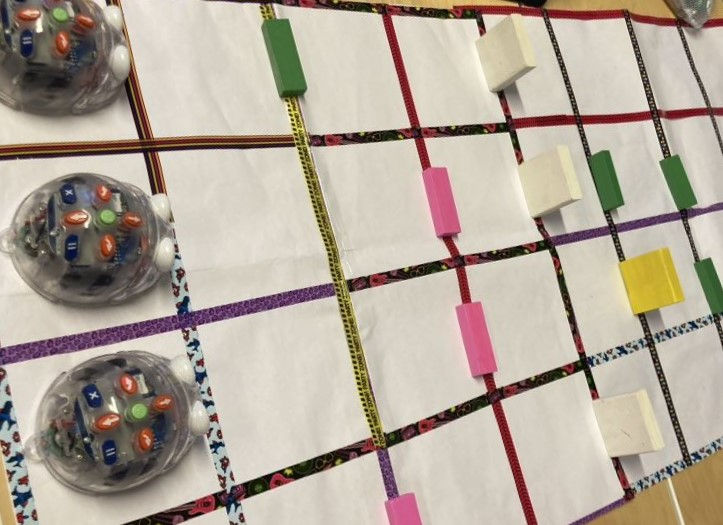

Dæmi um verkefni
Blue bot er sérstaklega gagnlegt kennslutæki fyrir leikskóla og yngri deildir grunnskóla, þar sem að vélmennin eru bara krúttleg leikföng er jafnt hægt að bjóða börnunum að leika með þau í sjálfsprottnum leik eða þá nýta þau í ótrúlegan fjölda verkefna. Þessi verkefni geta jafnt verið með fókus á upplýsingatækni eingöngu eða með tengingar við önnur námsvið. Oft er hægt að gera mjög skemmtileg verkefni án mikillar fyrirhafnar eða auka búnaðar.
Verkefnadæmi - Leikskólar
Frjáls leikur
Þegar að börnunum hefur verið kennt á vélmennið er tilvalið að leyfa þeim að leika sér aðeins með þau til þess að þau átti sig betur á því hvernig þau virki, að þau gera sér betur grein fyrir grundvallar atriðum forritunar, á borð við það að vélmennin fylgja skipunum hugsunarlaust eða að skipanirnar eru alltaf framkvæmdar í sömu röð. Þá er einnig auðveldara fyrir þau að taka þátt í flóknari verkefnum þegar þau hafa þekkingu á vélmennunum.
Völundarhús
Hægt er að láta bjöllurnar leysa völundarhús á öllum flækjustigum. Best er að byrja á að hafa þau ótrúlega einföld, beina línu eða í mesta lagi eina beygju. Þá þurfa börnin að telja skrefin sem bjallan þarf að fara til að komast á leiðarenda. Þetta er líka kjörið tækifæri til að læra aflúsun þegar eitthvað fer úrskeiðs og bjallan festist eða fer út fyrir brautina. Hægt er að nota motturnar sem framleiðandinn selur fyrir völundarhúsið eða þá bara einfaldlega gera sitt eigið. Þannig er hægt að teikna upp völundarhús á blað, teikna þau á gólfið með límbandi eða byggja það úr kubbum. Lykilatriðið þegar unnið er með völundarhús sem nýtast við slíkan efnivið er að gæta þess að byggja hana úr 15 sentimetra skrefum svo auðveldara sé fyrir börnin að forrita vélmennin.
Stór stafur - lítill stafur
Þegar börnin hafa náð góðu valdi á völundarhúsunum er hægt að tengja vélmennin við önnur námsvið skólans. Eitt dæmi um slíkt er „Stór stafur lítill stafur“. Fyrir þetta verkefni þarf að gera spjald eða borð með fjölda af stórum stöfum eða litlum stöfum sem hæfir aldri barnanna. Þá þarf að hafa laus spjöld með samsvarandi stöfum í bunka. Börnin draga svo til dæmis stóran staf og eiga þá að forrita bjölluna til þess að fara á samsvarandi lítinn staf eða öfugt. Þá þjálfa þau forritunina ásamt því að vinna í stöfunum.
Rím-bjöllur
Það er líka hægt að nota bjöllurnar í verkefni til að æfa rím. Gera þarf borð líkt og lýst var að ofan og setja svo prentaðar eða teiknaðar myndir á það. Svo er útbúinn bunki með myndum af orðum sem ríma við orðin á borðinu. Svo draga börnin mynd og eiga að senda bjölluna á orðið sem rímar við það sem drógu.
Sögubjöllur
Hægt er að kynna bjöllurnar fyrir börnunum í gegnum sögur, hægt er að fá mottu með ýmsum þekktum sögupersónum á borð við rauðhettu, grísina þrjá, geiturnar þrjár og svo framvegis. Þá er einnig hægt að útbúa eigin útgáfu með því að teikna borð líkt og hefur verið lýst að ofan, nota svo prentaðar eða teiknaðar myndir, leikfangadýr eða þess háttar til þess að tákan sögupersónurnar. Svo er hægt að lesa sögu og biðja svo börnin um að senda bjöllurnar á réttan stað eða búa til nýja sögu sem börnin þurfa að fylgja eftir með bjöllunni. Til dæmis:
Einu sinni var bjallan Bára að fara í gönguferð. Fyrst rakst hún á grísina þrjá. (Hlé meðan börnin senda vélmennið á réttan stað.) Grísirnir þrír voru í vandræðum því þeir voru læstir úti. Þeir báðu Báru um að hjálpa sér og fara til Rauðhettu sem átti enn þá sög eftir hörmungarnar með Úlfinum. (Hlé meðan börnin senda vélmennið á réttan stað.) Rauðhetta og Bára gengu svo til baka til grísanna (Hlé meðan börnin senda vélmennið á réttan stað.) Þegar þær komu gátu þær sagað lásinn af og hleypt grísunum inn. Grísirnir voru ósköp glaðir og buðu þeim inn í kökuboð og svo fóru þær heim.
Verkefnadæmi - Grunnskólar
Bjöllu spil
Útbúið er spilaborð með númeruðum reitum. Þetta getur verið með ýmsum útfærslum, einfalt hringborð, snákaspil, þrautabraut eða jafnvel Lúdó fyrir þá allra metnaðarfyllstu. Börnin kasta svo tening sem svo ákvarðar hve margar skipanir þær mega setja inn í vélmennið sitt. Þá þjálfar þetta jafnt talnaskilning ásamt því að krefjast betri skilnings á forritun til þess að gera færri mistök og komast fyrst í mark.
Viðbót við forritunarkennslu
Börn eiga auðveldara með að ná utan un hlutbundin viðfangsefni, einhverju sem er áþreifanlegt. Því er tilvalið að hafa Blue bot vélmenna til hliðsjónar þegar að börn eru að byrja að læra forritun í einhverju byrjendamáli á borð við Scratch Jr eða Makecode. Þá fá börnin einföld verkefni þar sem persónur eiga að fara á milli staða sem þau geta svo forritað í vélunum sem og með bjöllunum. Þetta hjálpar þeim að skilja hvernig forritð sem þau skrifa er keyrt og ætti að hjálpa þeim við laga forritið þegar eitthvað fer úrskeiðis.
Bjöllu-keppni
Útbúin er þrautabraut fyrir bjöllurnar. Börnin fá hvert sitt vélmennið og skiptast svo á að kasta teningum. Teningarnir skera úr um hve margar aðgerðir þau mega stimpla inn í vélmennin í einu. Þetta er mun flóknari útgáfa af spilunum því að þau þurfa að taka tillit til hinna vélmennanna, en staðsetning þeirra breytist að sjálfsögðu eftir því sem líður á spilið.
Bjöllurím - fyrir lengra komna
Hægt er að vinna með flóknari útgáfur af rímleiknum sem sagt var frá að ofan. Þannig er til dæmis hægt að hafa rím-orð með fleiri atkvæðum fyrir yngri börnin og svo bara orðin fyrir þau eldri. Þá er hægt að bæta við sam-og andheitum, annað hvort í formi í mynda eða orða, það er hægt að para saman orð og mynd og svo framvegis og framvegis
Forritunar"keppni"
Útbúið er völundarhús líkt og lýst var hér að ofan, nema í þetta skiptið eiga nemendurnir að reyna að leysa verkefnið í sem fæstum aðgerðum og þau sem ná að komast á leiðarenda í fæstum aðgerðum vinna. Þá er einnig hægt að láta börnin útbúa völundarhús fyrir hvert annað og bera saman lausnir eða keppast við að búa til sem skilvirkastar lausnir.